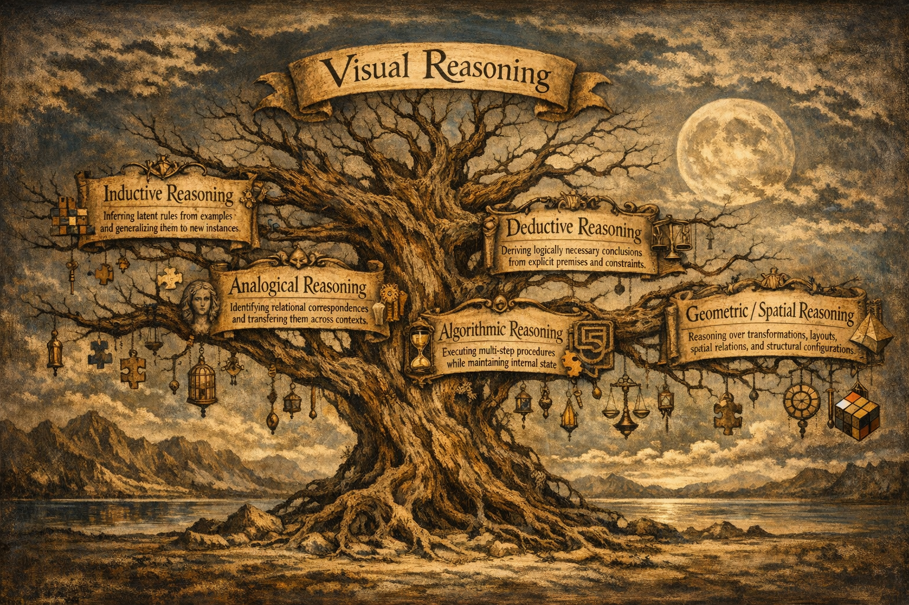

Project Page
Awesome Visual Puzzles
Reasoning or Pattern Matching?
Probing Large Vision-Language Models with Visual Puzzles
A curated companion page for our survey on visual puzzles as diagnostic tools for probing reasoning, abstraction, planning, deduction, and spatial understanding in Large Vision-Language Models.
Core question
Do LVLMs really reason over visual structure?
Or do they often succeed through shortcut-driven pattern matching, brittle cues, and visually grounded but shallow heuristics?
- Reasoning-centered taxonomy
- Benchmark families and failure modes
- Future directions for multimodal reasoning
Overview
Why visual puzzles?
Large Vision-Language Models often appear impressive on multimodal tasks, but it remains unclear whether they truly reason over visual structure or rely on shortcut-driven pattern matching.
Visual puzzles provide a particularly useful testbed because they are visually grounded, constrained and verifiable, less reliant on external world knowledge, and well-suited for probing abstraction, rule induction, analogy, planning, deduction, and spatial reasoning.
Definition
What is a visual puzzle?
In the survey’s framing, a visual puzzle is a reasoning-centered task with three core properties:
Explicitly constrained and verifiable structure
Focus on reasoning rather than knowledge priors
A visual puzzle can be viewed as a problem instance ⟨I, R, S⟩, where:
- I = input (visual input, optionally with text)
- R = rules or constraints, either explicit or implicit
- S = structured solution space, usually discrete or combinatorial, with verifiable correctness
Taxonomy
A reasoning-based taxonomy of visual puzzles
The survey organizes visual puzzles into five main reasoning categories.

Inductive Reasoning
Inferring latent rules from examples and generalizing them to new instances.
Analogical Reasoning
Identifying relational correspondences and transferring them across contexts.
Algorithmic Reasoning
Executing multi-step procedures while maintaining internal state.
Deductive Reasoning
Deriving logically necessary conclusions from explicit premises and constraints.
Geometric / Spatial Reasoning
Reasoning over transformations, layouts, spatial relations, and structural configurations.
Survey Structure
Reasoning categories
Inductive Reasoning
Benchmarks in this category test whether LVLMs can infer hidden rules from visual examples rather than match familiar surface patterns.
Papers
Foundations
- Raven Progressive Matrices — John Raven and Jean Raven. Handbook of Nonverbal Assessment, 2003.
Canonical matrix-completion paradigm for abstract visual pattern induction over attributes such as shape, size, and color. - Measuring Abstract Reasoning in Neural Networks — David Barrett, Felix Hill, et al. ICML, 2018.
Introduces Procedurally Generated Matrices (PGM), a controlled benchmark for testing rule induction and compositional abstract reasoning. - On the Measure of Intelligence — François Chollet. arXiv, 2019.
Introduces ARC, a grid-based induction benchmark where models must infer latent rules from few input-output examples and generalize to new instances.
Foundational LVLM Benchmarks
- EasyARC: Evaluating Vision Language Models on True Visual Reasoning — Mert Unsal and Aylin Akkus. arXiv, 2025.
Simplifies visual input to reduce perceptual confounds and better isolate inductive reasoning in ARC-style tasks. - ARC-AGI-2: A New Challenge for Frontier AI Reasoning Systems — François Chollet, Mike Knoop, et al. arXiv, 2025.
Raises the difficulty of ARC-style reasoning with stronger demands on deliberate thinking and compositional generalization. - BabyVision: Visual Reasoning Beyond Language — Liang Chen, Weichu Xie, et al. arXiv, 2026.
Probes the developmental roots of induction with early-vision-style tasks, exposing failures even on simple structure-learning problems.
Knowledge-Decoupled Probes
- VisualPuzzles: Decoupling Multimodal Reasoning Evaluation from Domain Knowledge — Yueqi Song, Tianyue Ou, et al. arXiv, 2025.
A representative benchmark for testing inductive reasoning while minimizing reliance on world knowledge and linguistic priors. - VisuRiddles: Fine-Grained Perception Is a Primary Bottleneck for Multimodal Large Language Models in Abstract Visual Reasoning — Hao Yan, Handong Zheng, et al. arXiv, 2025.
Examines induction under fine-grained perceptual demands, highlighting perception as a key bottleneck for abstract rule inference. - MME-Reasoning: A Comprehensive Benchmark for Logical Reasoning in MLLMs — Jiakang Yuan, Tianshuo Peng, et al. arXiv, 2025.
Reduces perceptual burden and knowledge dependence to better isolate the reasoning component of LVLM performance. - PuzzleVQA: Diagnosing Multimodal Reasoning Challenges of Language Models with Abstract Visual Patterns — Yew Ken Chia, Vernon Toh, et al. ACL Findings, 2024.
Frames visual puzzle solving as VQA, emphasizing simplicity, diversity, and rationale-based auditing of inferred rules. - VisualSphinx: Large-Scale Synthetic Vision Logic Puzzles for RL — Yichen Feng, Zhangchen Xu, et al. arXiv, 2025.
Uses large-scale synthetic puzzle data to study whether inductive abilities can be strengthened through training. - LogicVista: Multimodal LLM Logical Reasoning Benchmark in Visual Contexts — Yijia Xiao, Edward Sun, et al. arXiv, 2024.
A hybrid benchmark that sometimes provides hints, shifting the focus from pure rule discovery to rule grounding and execution.
Generalization Probes
- Stratified Rule-Aware Network for Abstract Visual Reasoning — Sheng Hu, Yuqing Ma, et al. AAAI, 2021.
Introduces I-RAVEN, a rule-annotated Raven-style benchmark used to test whether induced abstractions transfer beyond the training distribution. - A-I-RAVEN and I-RAVEN-Mesh: Two New Benchmarks for Abstract Visual Reasoning — Mikołaj Małkiński and Jacek Mandziuk. IJCAI, 2025.
Extends Raven-style evaluation to unseen configurations, attributes, and visual renderings, stressing transfer and compositionality.
Human-Based Intelligence
- IQBench: How “Smart” Are Vision-Language Models? A Study with Human IQ Tests — Tan-Hanh Pham, Phu-Vinh Nguyen, et al. arXiv, 2025.
Uses IQ-style visual artifacts to evaluate inductive reasoning, intermediate explanations, and alignment with human problem-solving. - MANBench: Is Your Multimodal Model Smarter than Human? — Han Zhou, Qitong Xu, et al. ACL Findings, 2025.
Tests inductive reasoning with maze-like and shape-based tasks, contrasting genuine abstraction with superficial pattern matching.
Analogical Reasoning
These benchmarks test whether LVLMs can identify relational structure, not just recognize individual objects or symbols.
Papers
Contrastive Concept Discovery
- Bongard Problems — Mikhail M. Bongard. Pattern Recognition, 1970.
Foundational contrastive visual concept-discovery paradigm: infer the abstract concept separating positive from negative image sets. - Bongard-HOI: Benchmarking Few-Shot Visual Reasoning for Human-Object Interactions — Huaizu Jiang, Xiaojian Ma, et al. CVPR, 2022.
Extends Bongard-style reasoning to natural images with human-object interactions, probing relational perception beyond synthetic primitives. - Bongard-OpenWorld: Few-Shot Reasoning for Free-Form Visual Concepts in the Real World — Rujie Wu, Xiaojian Ma, et al. ICLR, 2024.
Relaxes closed-world assumptions by introducing open-vocabulary visual concepts in real-world settings. - Bongard in Wonderland: Visual Puzzles That Still Make AI Go Mad? — Antonia Wüst, Tim Tobiasch, et al. ICML, 2025.
Revisits classic Bongard-style abstraction with visually simple but diagnostically precise concept distinctions. - Bongard-RWR+: Real-World Representations of Fine-Grained Concepts in Bongard Problems — Szymon Pawlonka, Mikołaj Małkiński, and Jacek Mandziuk. arXiv, 2025.
Grounds fine-grained Bongard concepts in real-world imagery, enabling comparison between synthetic and natural visual formulations.
Relational and Structural Mapping
- REBUS: A Robust Evaluation Benchmark of Understanding Symbols — Andrew Gritsevskiy, Arjun Panickssery, et al. arXiv, 2024.
Tests whether LVLMs can move beyond literal symbol recognition and perform relational mapping from visual wordplay to language. - COLUMBUS: Evaluating Cognitive Lateral Understanding Through Multiple-Choice Rebuses — Koen Kraaijveld, Yifan Jiang, et al. arXiv, 2024.
Evaluates analogical mapping and lateral interpretation in rebus-style multiple-choice settings. - MARVEL: Multidimensional Abstraction and Reasoning through Visual Evaluation and Learning — Yifan Jiang, Jiarui Zhang, et al. NeurIPS, 2024.
Uses geometric and abstract shapes to test whether models can preserve relational alignment, separating representation from analogy mapping. - VisualPuzzles: Decoupling Multimodal Reasoning Evaluation from Domain Knowledge — Yueqi Song, Tianyue Ou, et al. arXiv, 2025.
Includes knowledge-light analogy tasks of varying difficulty, exposing failures in structural mapping rather than world-knowledge recall. - VOILA: Evaluation of MLLMs for Perceptual Understanding and Analogical Reasoning — Nilay Yilmaz, Maitreya Patel, et al. ICLR, 2025.
Couples analogical reasoning with heavier perceptual demands, testing transfer across explicit visual analogy instances.
Analysis-Linked Rebus Evidence
- A Large and Diverse Multimodal Benchmark for Evaluating the Ability of Vision-Language Models to Understand Rebus Puzzles — Trishanu Das, Abhilash Nandy, et al. arXiv, 2025.
Provides additional evidence that LVLMs often default to literal symbolic descriptions instead of the relational mapping needed for rebus solving.
Algorithmic Reasoning
These tasks probe whether models can follow procedures, maintain evolving state, and execute multi-step reasoning over time.
Papers
Static Symbolic Puzzles
- PUZZLES: A Benchmark for Neural Algorithmic Reasoning — Benjamin Estermann, Luca A. Lanzendörfer, et al. NeurIPS, 2024.
Programmatically generated puzzles with varying size and difficulty, designed to test generalization in algorithmic execution over a well-defined action space. - AlgoPuzzleVQA: Diagnosing Multimodal Reasoning Challenges of Language Models with Algorithmic Multimodal Puzzles — Deepanway Ghosal, Vernon Toh, et al. NAACL, 2025.
Grid-based puzzles in a VQA format that probe action optimization, combinatorics, search logic, multimodal arithmetic, and graph reasoning. - VisualPuzzles: Decoupling Multimodal Reasoning Evaluation from Domain Knowledge — Yueqi Song, Tianyue Ou, et al. arXiv, 2025.
Its algorithmic instances emphasize procedural execution, including perceptual constraint satisfaction, combinatorics, and multimodal arithmetic.
Spatially Procedural Puzzles
- Jigsaw-Puzzles: From Seeing to Understanding to Reasoning in Vision-Language Models — Zesen Lyu, Dandan Zhang, et al. arXiv, 2025.
Evaluates procedural reasoning through multi-step spatial manipulation, requiring coherent state updates across assembly steps. - LEGO-Puzzles: How Good Are MLLMs at Multi-Step Spatial Reasoning? — Kexian Tang, Junyao Gao, et al. arXiv, 2025.
Tests whether models can maintain accumulating spatial representations under physical and geometric constraints during multi-step construction.
Interactive Planning
- PuzzleBench: A Fully Dynamic Evaluation Framework for Large Multimodal Models on Puzzle Solving — Zeyu Zhang, Zijian Chen, et al. arXiv, 2025.
Introduces an interactive environment where LVLMs must choose sequential actions and preserve verifiable intermediate states. - ING-VP: MLLMs Cannot Play Easy Vision-Based Games Yet — Haoran Zhang, Hangyu Guo, et al. arXiv, 2024.
Uses simple minimally interactive games to separate perceptual understanding from action implementation and planning. - BALROG: Benchmarking Agentic LLM and VLM Reasoning on Games — Davide Paglieri, Bartłomiej Cupiał, et al. ICLR, 2025.
Frames reasoning as acting in a dynamic environment with delayed rewards, stressing long-horizon agentic interaction. - PuzzlePlex: Benchmarking Foundation Models on Reasoning and Planning with Puzzles — Yitao Long, Yuru Jiang, et al. arXiv, 2025.
Focuses on multi-stage interactive execution in deterministic and stochastic settings, probing strategic coherence under evolving constraints. - ENIGMAEVAL: A Benchmark of Long Multimodal Reasoning Challenges — Clinton J. Wang, Dean Lee, et al. arXiv, 2025.
Introduces difficult multimodal challenges with unambiguous solutions to expose the limits of procedural cognition.
Deductive Reasoning
These benchmarks test whether LVLMs can apply explicit rules and constraints to visually grounded entities and maintain global consistency.
Papers
Symbolic Constraints
- LogicVista: Multimodal LLM Logical Reasoning Benchmark in Visual Contexts — Yijia Xiao, Edward Sun, et al. arXiv, 2024.
Evaluates deduction over facts extracted from images, requiring models to bind visual entities and relations to symbols that support formal logical execution. - VisuLogic: A Benchmark for Evaluating Visual Reasoning in Multi-Modal Large Language Models — Weiye Xu, Jiahao Wang, et al. arXiv, 2025.
Emphasizes visually grounded deduction with hard-to-articulate visual instances, testing whether models can reason without leaning on verbal reformulation. - VisualSphinx: Large-Scale Synthetic Vision Logic Puzzles for RL — Yichen Feng, Zhangchen Xu, et al. arXiv, 2025.
Treats deductive reasoning as a capability that can be strengthened through training on synthetic visual logic puzzles. - MME-Reasoning: A Comprehensive Benchmark for Logical Reasoning in MLLMs — Jiakang Yuan, Tianshuo Peng, et al. arXiv, 2025.
Reduces perceptual burden and knowledge dependence to more cleanly isolate deductive reasoning ability. - VisualPuzzles: Decoupling Multimodal Reasoning Evaluation from Domain Knowledge — Yueqi Song, Tianyue Ou, et al. arXiv, 2025.
Its deductive puzzle instances focus on explicit rule application while minimizing reliance on outside knowledge.
Grid-Based Constraints
- Sudoku-Bench: Evaluating Creative Reasoning with Sudoku Variants — Jeffrey Seely, Yuki Imajuku, et al. arXiv, 2025.
Tests whether LVLMs can maintain global consistency while making local assignments under explicit Sudoku-style constraints. - VGRP-Bench: Visual Grid Reasoning Puzzle Benchmark for Large Vision-Language Models — Yufan Ren, Konstantinos Tertikas, et al. arXiv, 2025.
Extends grid-based deduction to diverse rule systems, grid sizes, and decision spaces while disentangling reasoning from visual perception. - PUZZLES: A Benchmark for Neural Algorithmic Reasoning — Benjamin Estermann, Luca A. Lanzendörfer, et al. NeurIPS, 2024.
Also supports deductive evaluation by testing constraint propagation through multi-step symbolic manipulation in structured grid settings.
Geometric / Spatial Reasoning
This category stress-tests spatial grounding, geometric transformations, mental rotation, structural consistency, and spatial state tracking.
Papers
Geometric Transformations in Inductive Puzzles
- A-I-RAVEN and I-RAVEN-Mesh: Two New Benchmarks for Abstract Visual Reasoning — Mikołaj Małkiński and Jacek Mańdziuk. IJCAI, 2025.
Extends Raven-style abstract reasoning with stronger geometric attributes, testing whether models can generalize spatial relations beyond surface appearance. - BabyVision: Visual Reasoning Beyond Language — Liang Chen, Weichu Xie, et al. arXiv, 2026.
Shows that LVLMs struggle even with simple geometric primitives such as rotation and reflection when other basic attributes are present. - VisualPuzzles: Decoupling Multimodal Reasoning Evaluation from Domain Knowledge — Yueqi Song, Tianyue Ou, et al. arXiv, 2025.
Includes geometry-heavy visual puzzles where success depends on fine-grained spatial perception and generalization across diverse visual forms. - VisuRiddles: Fine-Grained Perception Is a Primary Bottleneck for Multimodal Large Language Models in Abstract Visual Reasoning — Hao Yan, Handong Zheng, et al. arXiv, 2025.
Highlights how geometric regularities are often missed when perception and spatial abstraction interact.
Spatial Structure in Analogical Reasoning
- Bongard in Wonderland: Visual Puzzles That Still Make AI Go Mad? — Antonia Wüst, Tim Tobiasch, et al. ICML, 2025.
Uses Bongard-style visual concepts built around spatial relations such as enclosure, alignment, and symmetry. - Bongard-RWR+: Real-World Representations of Fine-Grained Concepts in Bongard Problems — Szymon Pawlonka, Mikołaj Małkiński, and Jacek Mańdziuk. arXiv, 2025.
Tests whether models can preserve spatial concept structure in more realistic visual settings. - VOILA: Evaluation of MLLMs for Perceptual Understanding and Analogical Reasoning — Nilay Yilmaz, Maitreya Patel, et al. ICLR, 2025.
Probes whether models can transfer analogical structure while preserving the spatial relations that define the analogy.
Spatial State Tracking in Procedural Tasks
- Jigsaw-Puzzles: From Seeing to Understanding to Reasoning in Vision-Language Models — Zesen Lyu, Dandan Zhang, et al. arXiv, 2025.
Evaluates whether LVLMs can track part configurations and predict spatial transformations across intermediate assembly steps. - LEGO-Puzzles: How Good Are MLLMs at Multi-Step Spatial Reasoning? — Kexian Tang, Junyao Gao, et al. arXiv, 2025.
Tests multi-step spatial reasoning under construction-style constraints where models must maintain coherent intermediate states. - BALROG: Benchmarking Agentic LLM and VLM Reasoning on Games — Davide Paglieri, Bartłomiej Cupiał, et al. ICLR, 2025.
Embeds spatial reasoning into long-horizon interaction, where correct action selection depends on stable spatial state tracking.
Spatial Grounding in Deductive Constraints
- VGRP-Bench: Visual Grid Reasoning Puzzle Benchmark for Large Vision-Language Models — Yufan Ren, Konstantinos Tertikas, et al. arXiv, 2025.
Uses grid-structured problems where deduction depends on accurate interpretation of spatial configuration and rule propagation. - PUZZLES: A Benchmark for Neural Algorithmic Reasoning — Benjamin Estermann, Luca A. Lanzendörfer, et al. NeurIPS, 2024.
Supports spatially grounded deduction through structured puzzle layouts that require constraint propagation over visual states. - VisuLogic: A Benchmark for Evaluating Visual Reasoning in Multi-Modal Large Language Models — Weiye Xu, Jiahao Wang, et al. arXiv, 2025.
Shows that deductive reasoning can fail primarily because of spatial misinterpretation rather than incorrect logical rules. - LogicVista: Multimodal LLM Logical Reasoning Benchmark in Visual Contexts — Yijia Xiao, Edward Sun, et al. arXiv, 2024.
Requires spatial layouts and diagram structure to be correctly grounded before symbolic logical reasoning can succeed.
Geometry-Centric Reasoning Benchmarks
- GeoSketch: A Neural-Symbolic Approach to Geometric Multimodal Reasoning with Auxiliary Line Construction and Affine Transformation — Shichao Weng, Zhiqiang Wang, et al. arXiv, 2025.
Focuses directly on geometric construction and transformation, including rotations, reflections, affine mappings, and auxiliary-line reasoning. - Structured Task Solving via Modular Embodied Intelligence: A Case Study on Rubik’s Cube — Chongshan Fan and Shenghai Yuan. arXiv, 2025.
Evaluates whether models can decompose complex geometric configurations into modular subproblems and coordinate sequential spatial operations under strict constraints.
Cross-cutting Failure Modes
Recurring weaknesses across categories
Perception–reasoning bottleneck
Failure often begins with small perceptual mistakes that later derail reasoning.
Shortcut reliance
Models frequently exploit superficial patterns, style cues, or local correlations.
Brittle generalization
Performance drops sharply on novel renderings, compositions, or transformed instances.
Explanation–execution gap
LVLMs can produce convincing rationales while failing to execute valid reasoning steps.
Weak state consistency
Long-horizon tasks expose difficulties in tracking intermediate states and constraints.
Future Directions
Where visual puzzle evaluation can go next
The Illusion of Reasoning
LVLMs may generate fluent intermediate explanations that are not faithfully grounded in the visual input or the actual reasoning process.
Multi-Agent Collaboration
Agentic setups may improve puzzle solving by enabling proposal and verification of alternative hypotheses, explicit disagreement, and better reasoning-trace inspection.
Revisiting Training Objectives
Current training often rewards next-token fluency rather than state-consistent reasoning, long-horizon execution, intermediate-step verification, and counterfactual robustness.
Towards Compositional Generalization
Future benchmarks should better probe compositional depth, compositional breadth, controlled variable disentanglement, and abstraction under distribution shift.
Abductive and Lateral Visual Reasoning
A major open gap is visual reasoning under incomplete information, ambiguous evidence, competing hypotheses, and hypothesis revision.
Paper
Read the survey
Reasoning or Pattern Matching? Probing Large Vision-Language Models with Visual Puzzles
Maria Lymperaiou, Vasileios Karampinis, Giorgos Filandrianos, Angelos Vlachos, Chrysoula Zerva, Athanasios Voulodimos
Citation
BibTeX
@misc{lymperaiou2026reasoningpatternmatchingprobing,
title={Reasoning or Pattern Matching? Probing Large Vision-Language Models with Visual Puzzles},
author={Maria Lymperaiou and Vasileios Karampinis and Giorgos Filandrianos and Angelos Vlachos and Chrysoula Zerva and Athanasios Voulodimos},
year={2026},
eprint={2601.13705},
archivePrefix={arXiv},
primaryClass={cs.CV},
url={https://arxiv.org/abs/2601.13705}
}Contact
Get in touch
For questions, collaborations, or adding new visual puzzle papers, contact marialymp@ails.ece.ntua.gr.